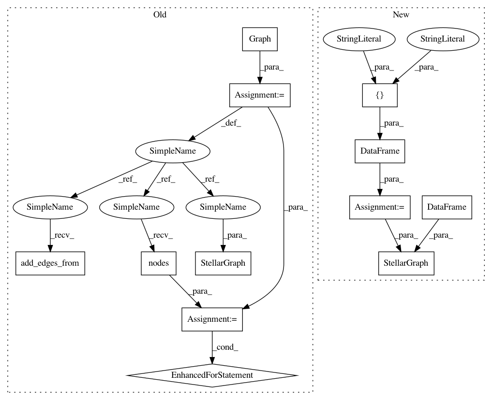

55ed2c7f725791f31983560c4ad520b2e0dc8e58,tests/data/test_metapath_walker.py,,create_test_graph,#,24
Before Change
networkx format.
g = nx.Graph()
edges = [
("0", 1),
("0", 2),
(1, 3),
(1, 4),
(3, 6),
(4, "7"),
(4, 8),
(2, "5"),
("5", 9),
("5", 10),
("0", "0"),
(1, 1),
(3, 3),
(6, 6),
(4, 4),
("7", "7"),
(8, 8),
(2, 2),
("5", "5"),
(9, 9),
(
"self loner",
"self loner",
), // node that is not connected with any other nodes but has self loop
]
g.add_edges_from(edges)
g.add_node(
"loner"
) // node that is not connected to any other nodes and not having a self loop
for node in g.nodes():
if type(node) == str: // make these type s for string
g.nodes[node]["label"] = "s"
else: // make these type n for number
g.nodes[node]["label"] = "n"
g = StellarGraph(g)
return g
class TestMetaPathWalk(object):
After Change
networkx format.
nodes = {
"s": pd.DataFrame(index=["0", "5", "7", "self loner", "loner"]),
"n": pd.DataFrame(index=[1, 2, 3, 4, 6, 8, 9, 10]),
}
edges = pd.DataFrame(
[
("0", 1),
("0", 2),
(1, 3),
(1, 4),
(3, 6),
(4, "7"),
(4, 8),
(2, "5"),
("5", 9),
("5", 10),
("0", "0"),
(1, 1),
(3, 3),
(6, 6),
(4, 4),
("7", "7"),
(8, 8),
(2, 2),
("5", "5"),
(9, 9),
(
"self loner",
"self loner",
), // node that is not connected with any other nodes but has self loop
],
columns=["source", "target"],
)
return StellarGraph(nodes, edges)
class TestMetaPathWalk(object):
def test_parameter_checking(self):
In pattern: SUPERPATTERN
Frequency: 3
Non-data size: 12
Instances
Project Name: stellargraph/stellargraph
Commit Name: 55ed2c7f725791f31983560c4ad520b2e0dc8e58
Time: 2020-03-03
Author: Huon.Wilson@data61.csiro.au
File Name: tests/data/test_metapath_walker.py
Class Name:
Method Name: create_test_graph
Project Name: stellargraph/stellargraph
Commit Name: 55ed2c7f725791f31983560c4ad520b2e0dc8e58
Time: 2020-03-03
Author: Huon.Wilson@data61.csiro.au
File Name: tests/data/test_metapath_walker.py
Class Name:
Method Name: create_test_graph
Project Name: stellargraph/stellargraph
Commit Name: 3db0f69797d05b8090e4f1c72e9428991e3f2ff0
Time: 2020-03-04
Author: Huon.Wilson@data61.csiro.au
File Name: tests/mapper/test_node_mappers.py
Class Name:
Method Name: example_hin_3
Project Name: stellargraph/stellargraph
Commit Name: b17c639862ab1b9ab14e8c55a70e0ce002967e3f
Time: 2020-03-03
Author: Huon.Wilson@data61.csiro.au
File Name: tests/mapper/test_node_mappers.py
Class Name:
Method Name: example_graph_2